| 日付 | 2012年3月20日（火） |
|---|---|
| 山域 | 奥秩父 |
| メンバー | 家族（妻、長女・1歳） |
| 山行形態 | 子連れ日帰り |
| アクセス | 車 |
| ルート (Map) | 平沢峠登山口→平沢山→飯盛山→平沢→平沢峠登山口 |
奥秩父の西端に飯盛山という山がある。
山自体は取るに足らないくらいに小さいのだが、八ヶ岳の絶好の展望台として有名だ。
標高が高いため積雪量が心配だったが、ここ最近暖かかったため雪もだいぶ解けたであろう。
晴天が予想できる1日を選んで、久々の雪山を眺めに行ってみることにする。
中央自動車道を走って長野に向かう。
車窓からは真正面に真白な南アルプスが見えてくる。
正面に白峰三山、右端に甲斐駒ヶ岳が見え、テンションが上がる。
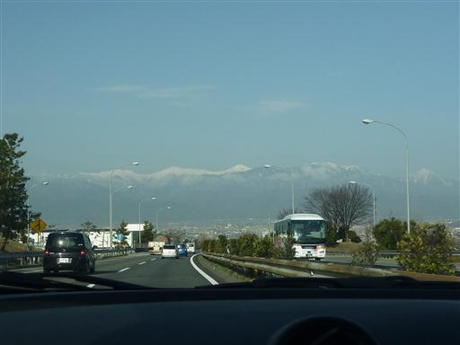
8:46 平沢峠登山口到着。標高1450m。
山に登るまでもなく、もうすでにこの場所が八ヶ岳の絶好の展望台だ。
この時期は閉鎖されているが土産物屋が併設されている。
夏は観光客で賑わいそうだ。
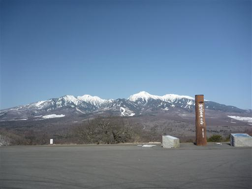
駐車場の前から登山道に入っていく。
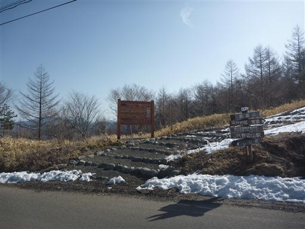
スパッツを忘れるというミスをしてしまったが、登山道の雪は心配したほど多くない。
しかし踏み固められて凍っているため、ツルツル滑って登りにくい。
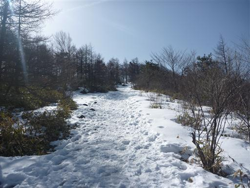
遠くに南アルプスが聳えている。
個々のピークは白いのだが、上越国境の山や北アルプスに比べると、
南アルプスは雪が少なく、全体的に黒い。
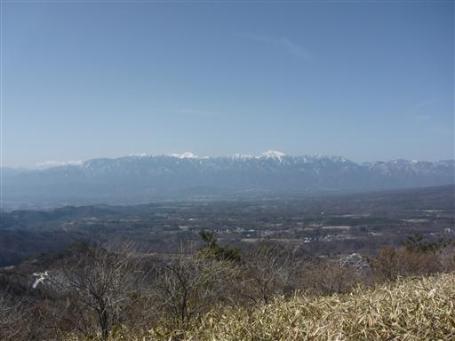
富士山が微かに見えている。その右手前に見える山は以前登った茅ヶ岳だ。
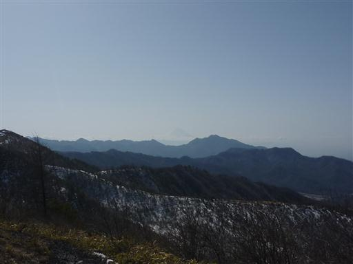
9:27 平沢山山頂到着。標高1653m。
この山は飯盛山より10m高い。登山口からの標高差はたったの200mで、あっという間の到着だ。
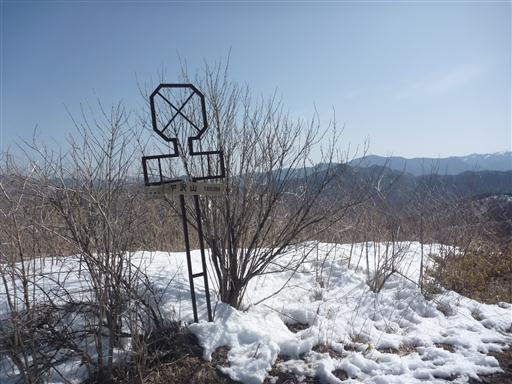
真正面に八ヶ岳が大きい。中央が赤岳、左が権現岳だ。
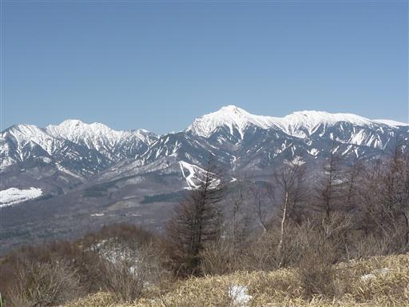
目を北に移すと、浅間山が見えている。
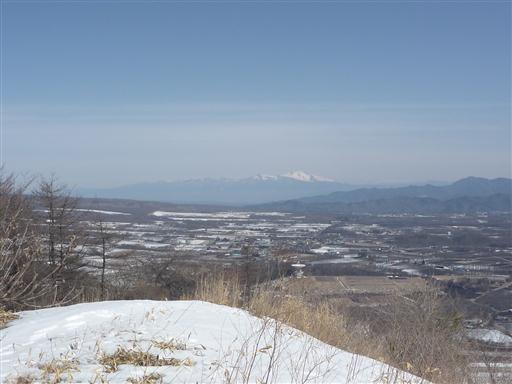
遠く北岳を望む。北岳バットレスの絶壁がよく見える。
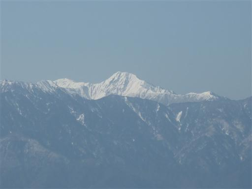
こちらは甲斐駒ヶ岳。いつかは登ってみたい山だ。
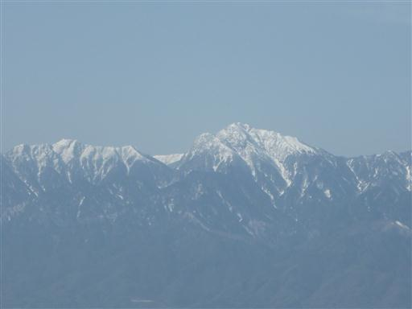
これから辿る稜線。右のピークが飯盛山だ。
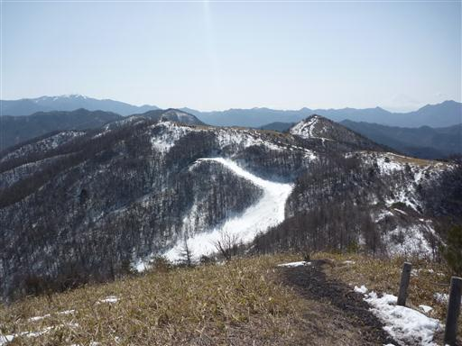
少し下ったところから振り返って平沢山を望む。
南面は雪がなく笹原が広がっている。
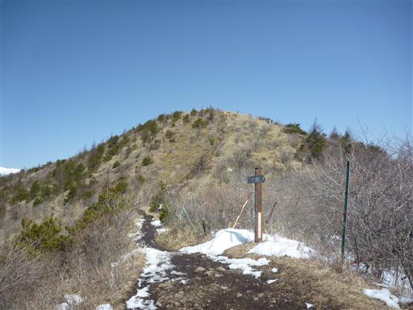
三角形の飯盛山が目の前に見えてくる。
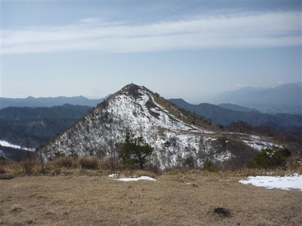
9:57 飯盛山山頂到着。標高1643m。
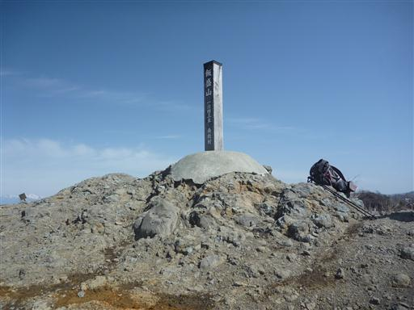
山頂には展望を遮るものは何もなく、360度の展望が広がる。
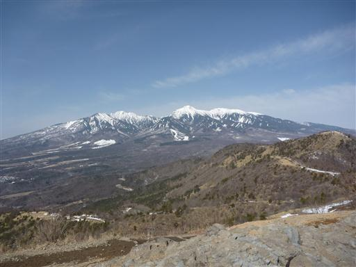
奥秩父の金峰山と瑞牆山も遠くに見えている。
昼食にはまだ早いので、軽食をとって下山することにする。
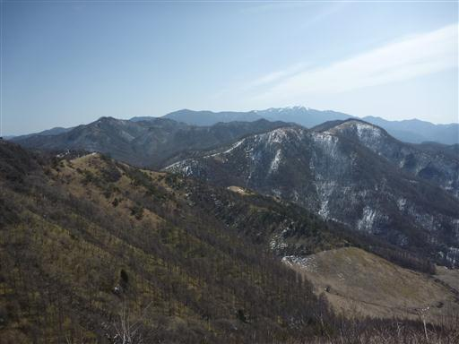
下山は登りとは道を変えて平沢集落に下る道を選ぶ。

振り返ると丸い飯盛山の姿が望める。
この山は飯を盛ったような形をしていることから名づけられたらしい。
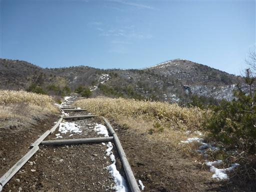
山頂付近から中腹にかけて牧場が広がっているため柵が設けられている。
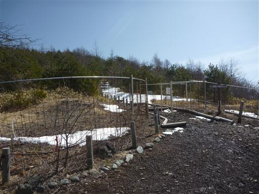
樹林帯の中に入ると、登山道は再び雪に覆われる。
落葉樹林が広がる美しい場所だ。
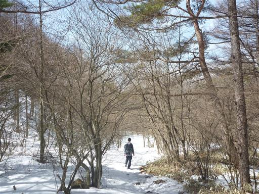
平沢集落に下山。
下山に使った道の方が長かったため、ここから駐車場まで200mほど車道を登る必要がある。
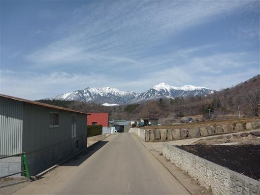
地形図を見ると蛇行する車道の他にまっすぐ駐車場方面に伸びている道があるように見える。
地元の人に聞いてみると、荒れてはいるが行けなくはないとのこと。
電線に沿って歩けばよいというアドバイスを頂き、行ってみることにする。
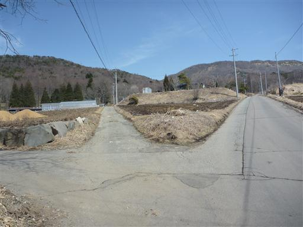
道はすぐに笹薮に覆われてしまい、非常に歩きにくい。
また、この道は蛇行を繰り返すので、余りショートカットにはならなさそうだ。
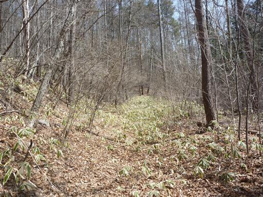
車道が見えてきたところで笹薮に覆われた道が途絶えてしまった。
最後は藪を突っ切って車道に合流する。
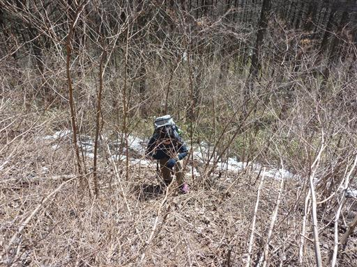
後は駐車場まで広い車道を歩いていく。
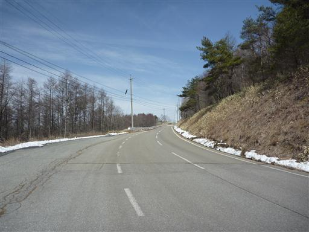
道端にひっそりと平賀源心（戦国時代の武将）の胴塚がある。
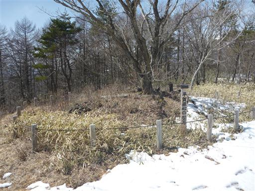
12:21 平沢峠登山口到着。10台程度の車が停まっている。
飯盛山に登っている人の他に、観光でここに来ている人もいるようだ。
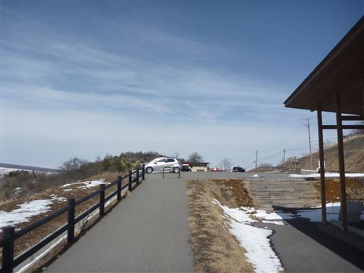
この場所は日本の分水嶺になっている。
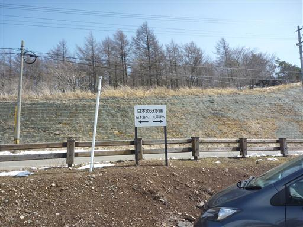
駐車場の側に獅子岩と呼ばれる岩がある。
子持山にも同名の岩があったが、こちらの岩は獅子には見えない。
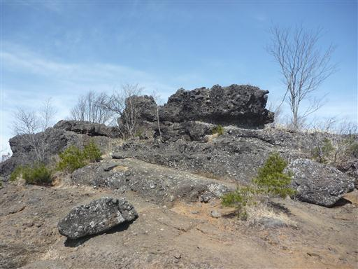
獅子岩の上に登ってみる。いくつかの岩が連なっている。
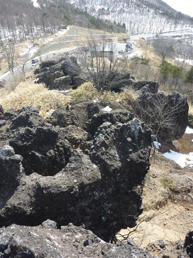
帰りにJR鉄道最高地点に寄る。
ここはJR小海線というローカル路線で標高は1375mらしい。
小海線は何度か世話になっているので、この場所も1回くらいは電車で通っているはずだ。
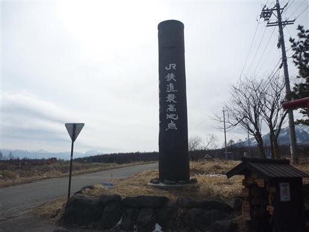
側には鉄道神社という謎の神社が祀られている。
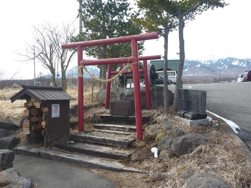
土産物屋を兼ねたレストランまである。中に入るとそれなりに客がいるから驚きだ。
ソフトクリームとお土産にリンゴを買う。
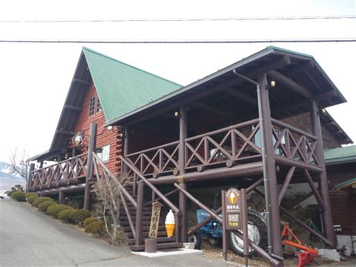
めったに来ない小海線の列車がたまたまやってくる。JR鉄道最高地点を走る列車だ。
最高の展望を満喫でき、大満足の1日だった。
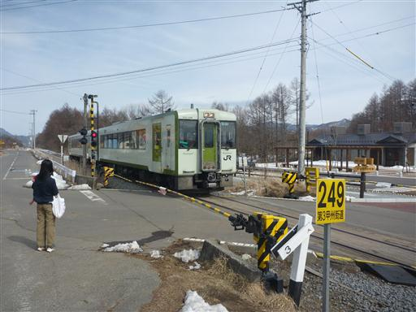